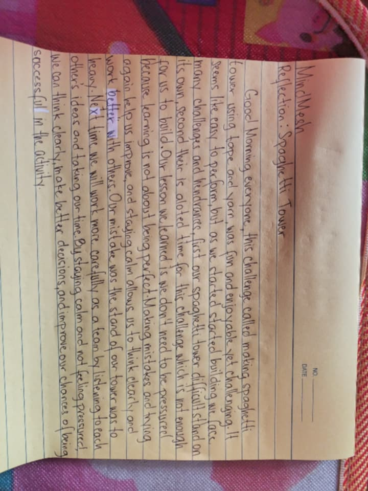

In this activity maam wenda gave us a task that we need to create a marshmallow tower using spaghetti sticks. Unfortunately, our group failed and was disqualified because we did not have enough time to finish the tower. We also panicked, which made it harder for us to think clearly and work properly. Even though we failed, the activity taught us the importance of time management and staying calm under pressure.

"As a team, we learned that in creating a marshmallow tower, we don’t need to panic as long as we stay focused on building it strong and steady so it can stand on its own. We realized that rushing or getting frustrated only makes it harder to balance the spaghetti sticks and marshmallows. By planning carefully and helping each other, we were able to work more efficiently. This activity also taught us patience, teamwork, and the importance of thinking before taking action. Even though our tower didn’t turn out perfect, the experience showed us that staying calm and organized is more important than just finishing quickly. Unfortunately, we were disqualified because we didn’t follow the rule of not touching the tower after the time was up. We learned that following instructions is just as important as working hard."
— The MindMesh Team
"During the Marshmallow Challenge, our tower fell several times, and we didn’t win. At first, it was frustrating, but we realized that failing helped us learn what works and what doesn’t. We tried different ideas, worked together, and improved our design each time. This experience taught me that losing is not the end it’s a chance to learn, try again, and get better."
"During the Marshmallow Tower activity, I realized that staying focused and calm was really important. At first, it was challenging because every time we tried to build the tower, it kept falling. It was frustrating to see our efforts fail several times, but we didn’t give up. We tried different strategies and gave our best to make the tower stand on its own. Even though it eventually lost its balance, I learned the importance of teamwork, patience, and perseverance. This activity showed me that failure is part of the process, and trying again is what helps us improve."
"The marshmallow challenge showed that teamwork and communication are important. We learned that testing ideas quickly works better than spending too much time planning. When something didn’t work, we had to adjust and try again. Overall, it helped us understand problem-solving, creativity, and working together under pressure."
"The marshmallow challenge showed how working together can make a big difference. At first, we struggled to make our structure stand, but we learned from our mistakes. Trying different ideas helped us improve instead of giving up. Everyone shared ideas and helped solve problems. Overall, the challenge taught us the importance of teamwork, creativity, and not being afraid to fail."
Access our full documentation, including initial sketches, idea mapping, and technical notes through our shared Google Drive folder.
View Documentation on Google Drive